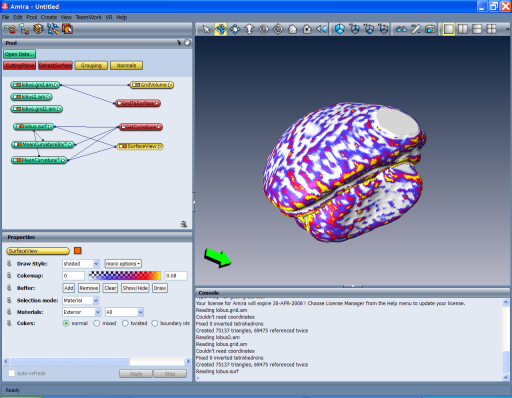

Data objects and modules are represented as little
icons in the Pool (top left). In the 3D graphic window a
surface colored according to its curvature is shown. Curvature
information has been computed by a computational module and is stored
as a separate data object.
In the left window the parameters of selected modules are shown. The lower right pane
provides a Tcl-command shell as well as access to the help browser.